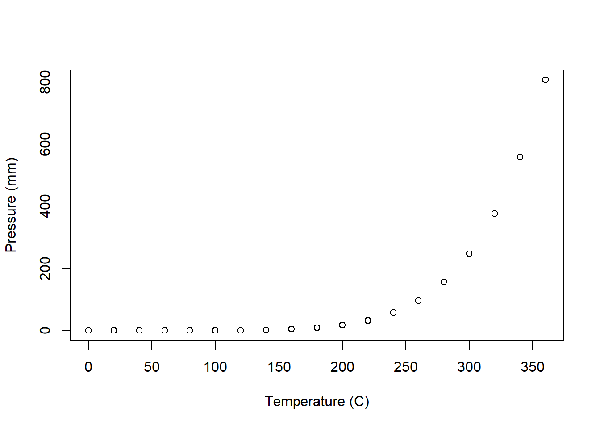
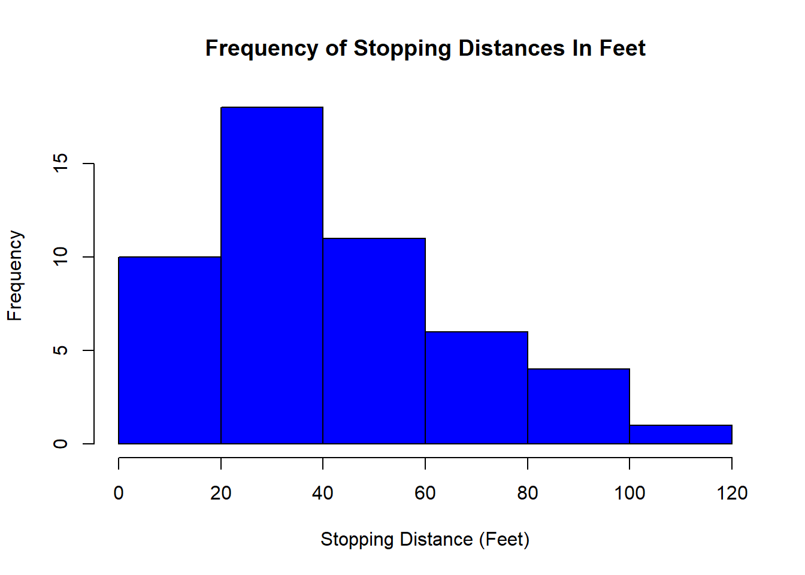
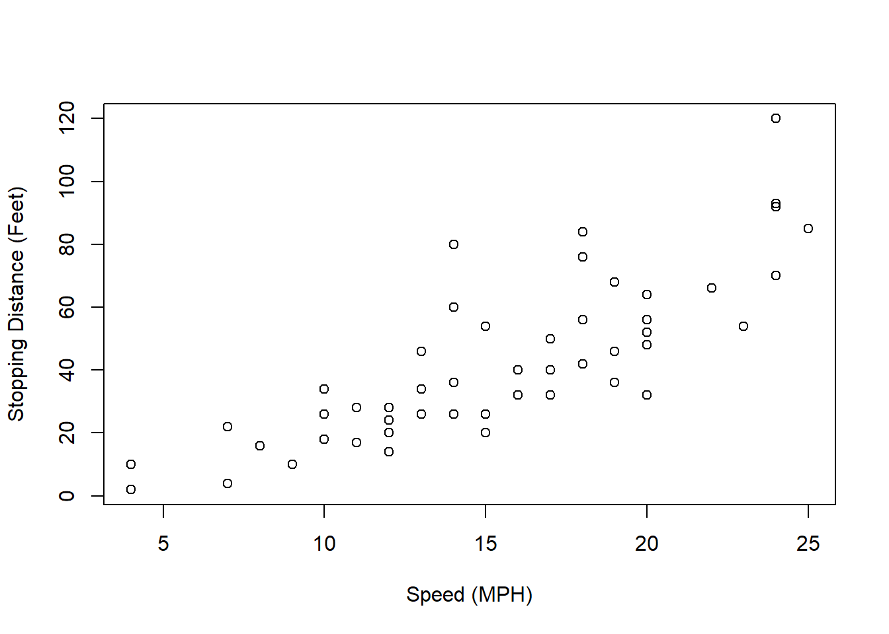

Code
summary(cars) speed dist
Min. : 4.0 Min. : 2.00
1st Qu.:12.0 1st Qu.: 26.00
Median :15.0 Median : 36.00
Mean :15.4 Mean : 42.98
3rd Qu.:19.0 3rd Qu.: 56.00
Max. :25.0 Max. :120.00 Changes: Changed all of the font to Georgia in HTML, also changed the font color to red.
This data set contains information about Cars. The data was collected in 1920s.It has 50 rows and 2 variables.
summary(cars) speed dist
Min. : 4.0 Min. : 2.00
1st Qu.:12.0 1st Qu.: 26.00
Median :15.0 Median : 36.00
Mean :15.4 Mean : 42.98
3rd Qu.:19.0 3rd Qu.: 56.00
Max. :25.0 Max. :120.00 This chunk of R code displays a plot of the Pressure data set! This includes a scatter plot of Temperature, measured in Celsius, on the X axis and Pressure on the Y Axis.
pressure_plot <- plot(pressure, xlab = "Temperature (C)", ylab = "Pressure (mm)")
Similarly to the prior R code chunk, this chunk of code will display scatter plots. However, the data set utilized is Cars, which analyzes the relationship between Speed in MPH, and Stopping Distance in feet.
Add Color to the Plot
Have a title for the scatter plot.
dist <- cars$dist
hist(dist, xlab = "Stopping Distance (Feet)", ylab = "Frequency", main = "Frequency of Stopping Distances In Feet", col = "blue")
plot(cars, xlab = "Speed (MPH)", ylab = "Stopping Distance (Feet)")
